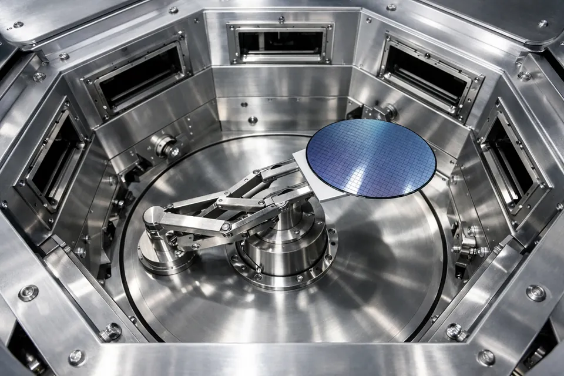

| 진공의 문제 | 설계 답 |
|---|---|
| 윤활유 증발 → 오염 | 구동부를 밖에 · 무윤활 재질 |
| 대류 없음 → 모터 발열 | 모터를 대기 쪽에 두어 냉각 |
| 축 관통 → 누설 | 자석으로 벽 너머 전달 |
고온 공정 근처를 오가므로 세라믹 등 내열·저오염 재질을 씁니다.
대기 로봇의 진공 흡착은 "주변 공기압이 웨이퍼를 눌러 주는" 원리라 진공 안에서는 힘이 생기지 않습니다. 그래서 마찰 패드 위에 얹거나 가장자리 걸림(edge grip)으로 잡습니다.
Transfer Chamber를 중심으로 Load Lock과 여러 공정 챔버(PM)가 방사형으로 붙습니다. 한 로봇이 웨이퍼를 여러 챔버로 분배합니다.
한 번 진공에 들어온 웨이퍼가 여러 공정을 진공을 깨지 않고 연속 처리합니다.
| 코드 | 상황 | 고칠 것 |
|---|---|---|
| ALM-101 / 102 | 진공 로봇으로 전환만 하고 바로 움직임 | 진공 로봇도 Initialize → Home |
| ALM-314 | 배기가 끝나기 전 TM 밸브 열기 | Pump Down 완료(1 Torr 이하) 확인 |
| ALM-304 | TM 밸브를 안 열고 Load Lock으로 Extend | TM 밸브 먼저 열기 |
| ALM-502 | Load Lock이 비었는데 Pick | EFEM이 웨이퍼를 넣었는지(Load Lock 탭 · 화면) 확인 |
| ALM-601 | 공정이 끝나기 전 챔버에서 Pick | PM Status의 남은 시간 · 완료 로그 확인 |
| ALM-505 | 웨이퍼가 있는 챔버에 또 Place | 다른 챔버로 · 먼저 반출 |
| ALM-316 | 팔이 Load Lock 안인데 TM 밸브 닫기 | Retract 후 닫기 |
① 진공 로봇의 구동부가 진공 밖에 있는 이유 두 가지는? → 윤활유 증발 오염, 모터 발열.
② Vacuum Robot으로 전환하자마자 Move를 누르면? → ALM-101, 진공 로봇도 Initialize → Home.
③ PM1(10초)·PM2(22초)에 두 장을 넣을 때 어느 쪽을 먼저? → 긴 PM2.